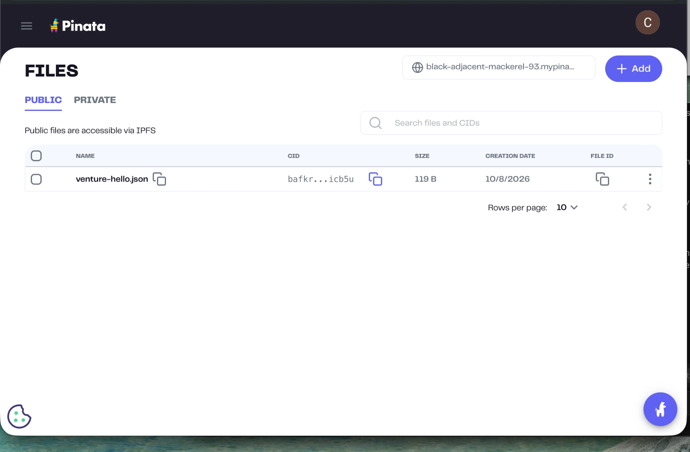
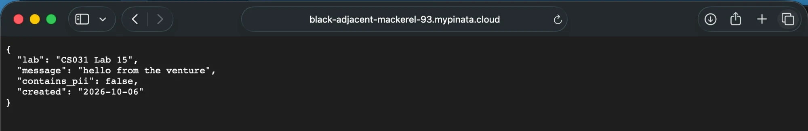

Resumen del laboratorio
En este laboratorio se cerró el ciclo de almacenamiento content-addressed: se subió un archivo pequeño sin datos personales a IPFS a través de Pinata, se obtuvo su CID, se confirmó que el pin está activo, se resolvió el contenido por un gateway HTTP y se documentó la política de datos del venture en STORAGE.md.
Estado de actividades
Datos del artefacto
| Archivo | venture-hello.json (119 bytes, contains_pii: false) |
|---|---|
| CID | bafkreigprxyihupukgjjjnrkurd3qq66ys5tm52xxn76apwsxymxticb5u |
| Provider | Pinata, plan gratuito |
| Gateway que resuelve | black-adjacent-mackerel-93.mypinata.cloud/ipfs/<CID> |
| Fecha | 2026-10-08 |
| Resolve | sí El gateway devolvió 200 con los mismos 119 bytes (SHA-256 idéntico al archivo local). |
El CID calculado localmente, sin cuenta ni internet, coincidió con el que devolvió Pinata. Eso demuestra que el CID se deriva del contenido.
Flujo realizado
venture-hello.json con un script que rechaza correos, números largos, JWT y llaves privadas.npm run list./ipfs/<CID> en el gateway y se comparan los bytes con el archivo local.Evidencia
Pin activo: Pinata → Files (pestaña Public)

Resolve en el navegador: el gateway sirve el contenido del CID

Resolve por gateway (curl, sin llaves)
$ curl -si https://black-adjacent-mackerel-93.mypinata.cloud/ipfs/bafkreigprxyihupukgjjjnrkurd3qq66ys5tm52xxn76apwsxymxticb5u
HTTP/2 200
content-type: application/json
content-length: 119
{
"lab": "CS031 Lab 15",
"message": "hello from the venture",
"contains_pii": false,
"created": "2026-10-06"
}Lab log
2026-10-08T18:23:38Z pin venture-hello.json bafkreigprx...icb5u
2026-10-08T18:23:53Z resolve bafkreigprx...icb5u sí
2026-10-12T19:59:39Z resolve bafkreigprx...icb5u síSTORAGE.md: política de datos
Los datos del venture se clasifican por sensibilidad y durabilidad, y de esa combinación sale el destino.
| Dato | Sensibilidad | Durabilidad | Destino |
|---|---|---|---|
| Landing, imágenes y assets de marketing | Público | Meses | Location-addressed (hosting/CDN) |
| Documentos públicos que no cambian | Público | Años | IPFS + pin (Pinata) |
Artefacto del lab (venture-hello.json) | Público | Efímero | IPFS + pin, como evidencia temporal |
| Notas y logs de operación | Interno | Efímero / meses | Location-addressed |
| Llaves, API keys y JWT | Interno (crítico) | Efímero | Never-permanent: gestor de secretos |
| Datos de clientes | PII | Años | Never-permanent: base cifrada con borrado |
| KYC y registros AML | Regulated | Según ley | Never-permanent: sistema auditable y borrable, nunca IPFS |
| Hash de un acta firmada (no el documento) | Público | Permanente | Raro candidato a permanencia |
Promesas que NO haremos
- "Borramos todo cuando cierras la cuenta" para contenido ya publicado con un CID público.
- "Si editas el documento, la versión vieja desaparece": el CID viejo sigue vivo mientras alguien lo pinnee.
- "Cumplimos el derecho al olvido" o "retiramos el contenido de internet" tras un reporte de abuso.
Promesa que SÍ haremos
Que cada documento público tenga un CID verificable que prueba que no cambió, y mantenerlo pinneado mientras el venture opere, avisando antes de quitar el pin.
Texto completo, incluida la sección sobre el perímetro PSAV / Decreto 15-2026: STORAGE.md.
Seguridad
- El JWT de Pinata vive solo en un archivo
.envlocal, que está en.gitignore. La API key se creó con permisos mínimos. - No se subió PII ni KYC: lo que se pinnea en IPFS público no se puede borrar de la red.